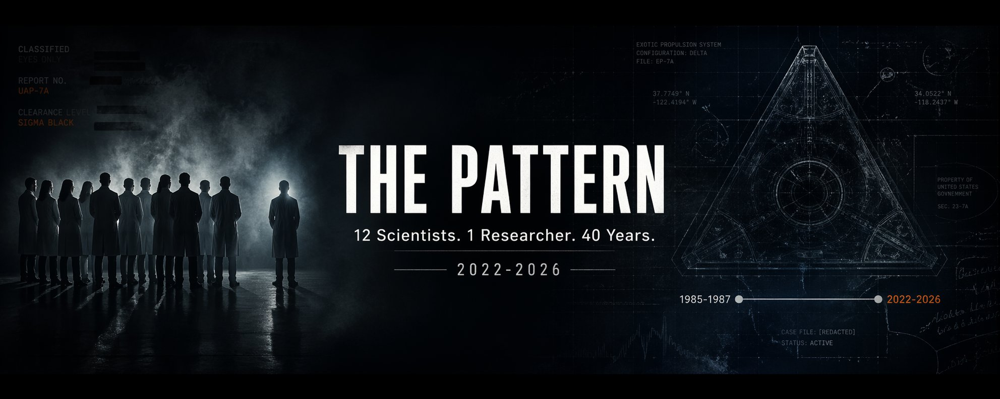
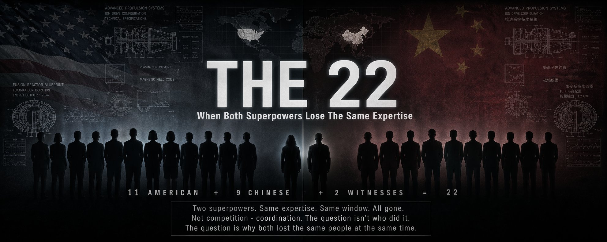
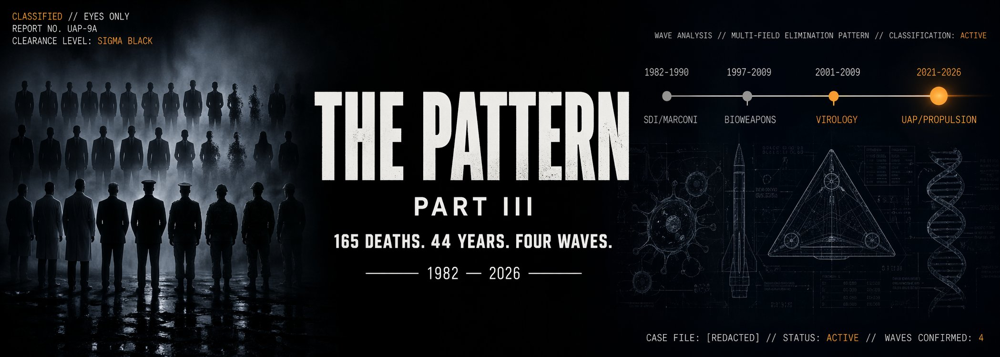
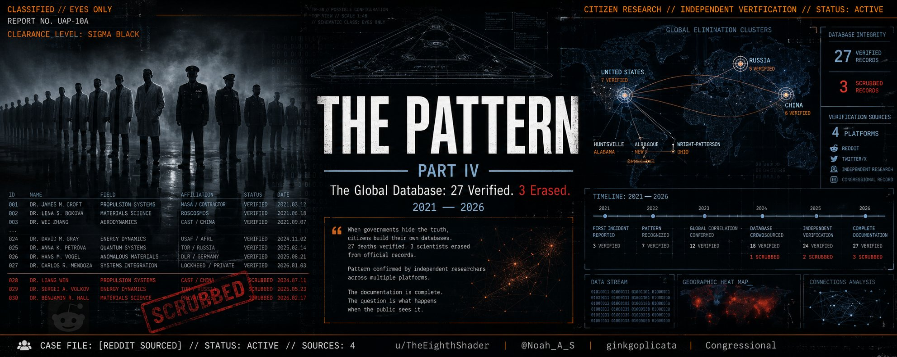
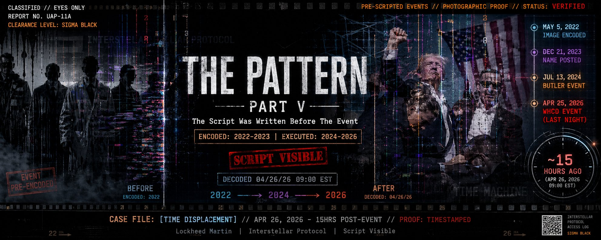
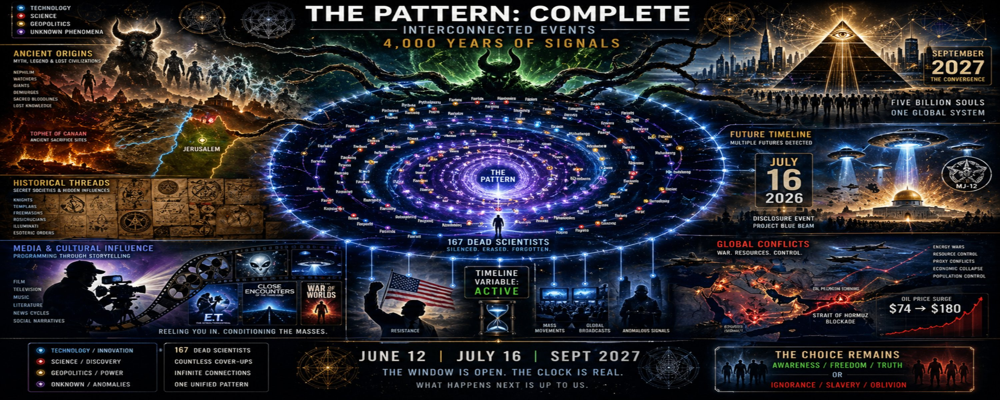
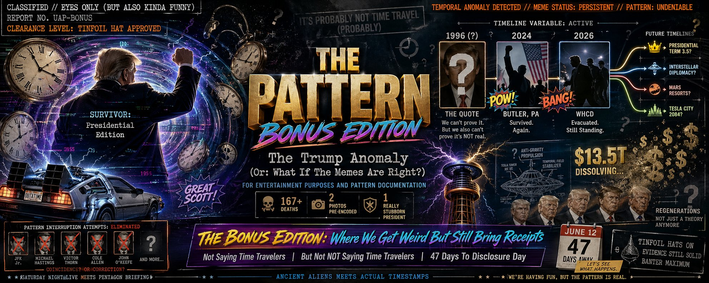
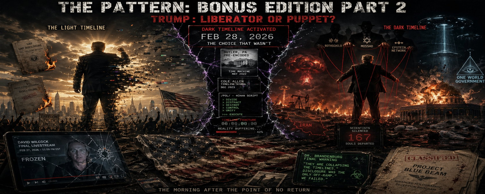

✕ CLOSE
167 dead scientists. Four decades. Two superpowers. Pre-scripted events with photographic proof. An ancient thread running from Canaan to Hollywood. A 4chan post that predicted the Iran war eight months early. Six articles documenting what the mainstream won't touch. Draw your own conclusions.

Twelve scientists. One researcher. Forty years of eliminations. The investigation that started it all — mapping the deaths to the exact expertise needed to build a Gen 3 exotic propulsion system.

When both superpowers lose the same expertise simultaneously. 11 American + 9 Chinese scientists. Same fields. Same window. The A-Team that could never be assembled — because someone made sure of it.

The same signature every time. Four waves spanning four decades — from the Marconi SDI scientists of the 1980s to the current UAP propulsion cluster. Before testimony. Before disclosure. Before the public knows.

27 verified. 3 erased. When Reddit researchers started digging, they found the pattern extended globally — US, China, Russia, Iran. Three Chinese scientists scrubbed entirely from official records. Credit: u/TheEighthShader, @Noah_A_S.

The Butler photograph existed in May 2022 — two years before Butler happened. Cole Allen's name was posted in December 2023 — sixteen months before the WHCD shooting. Someone is showing us the storyboard. Timestamps don't lie.

Everything. 167 dead scientists. Ancient demon worship in the location of modern Israel. Epstein-Mossad-Rothschild. Hollywood programming. A 4chan post that predicted the Iran war. 81 days until July 16. The full synthesis. Read this last.

The fun one. The liberator hypothesis. Why does a man who said "time travelers keep trying to kill me" keep surviving attempts that would end anyone else? Mission from God or temporal anomaly? Evidence-based banter — but the pattern is still real.

The other side of the coin. Same evidence, opposite conclusion. What if the time travelers aren't trying to kill Trump to stop disclosure — but to stop something far worse? The darker hypothesis. Read alongside Bonus I.